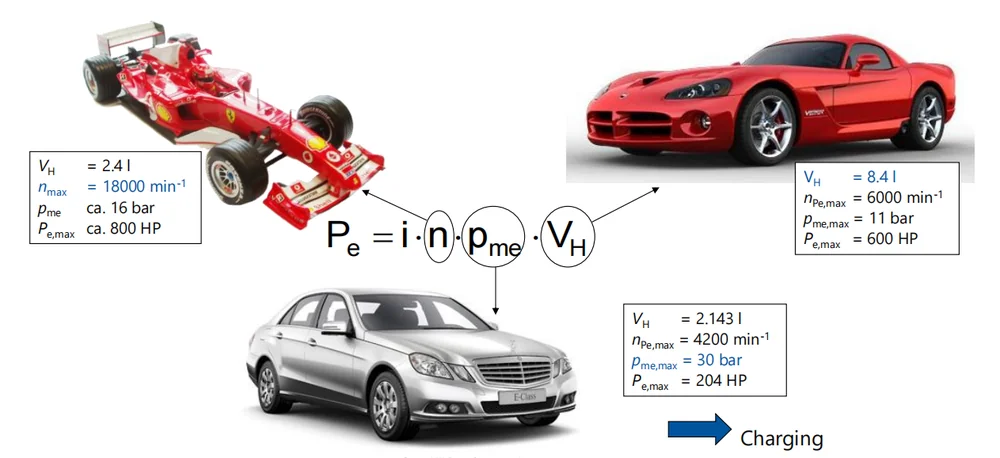
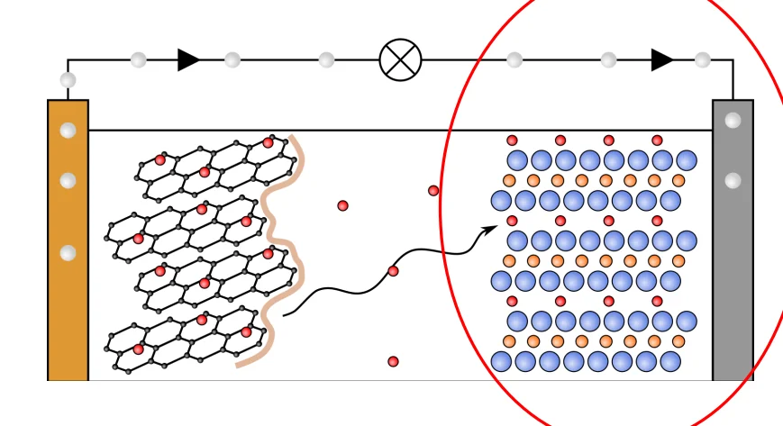
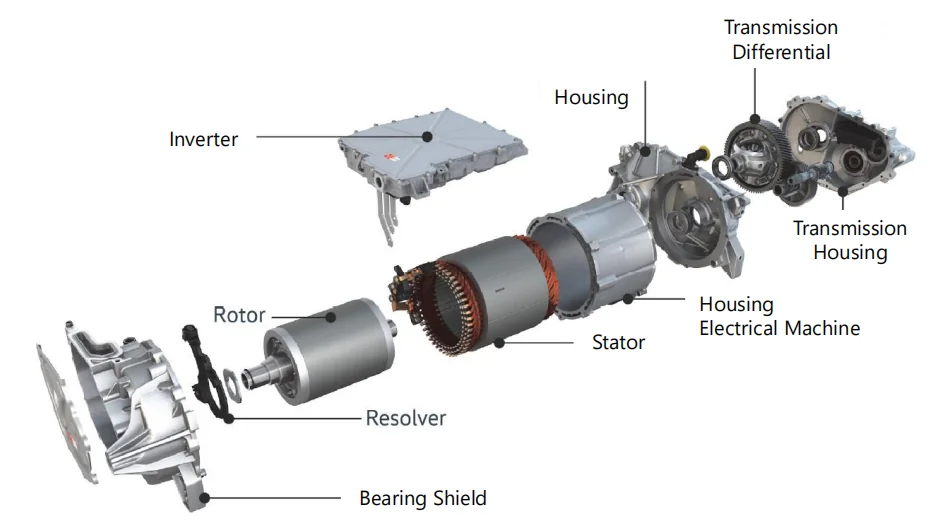
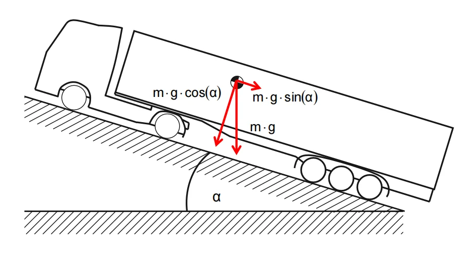
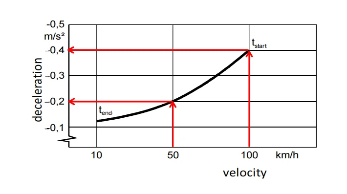
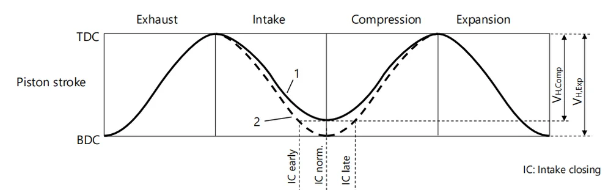
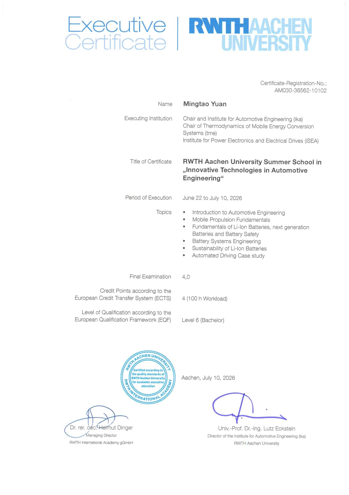

03 / ENGINEERING STUDY
RWTH Aachen.
Automotive Engineering Short Course · June 21 – July 11, 2026
LEARNING IN AACHEN
From driving questions to engineering study.
In summer 2026, I completed RWTH Aachen's three-week summer school, “Innovative Technologies in Automotive Engineering.” I explored vehicle dynamics and propulsion systems, automated driving, and lithium-ion battery technology—from battery ageing and safety to pack design, thermal management, and sustainability.
I chose to study in Germany because I wanted to learn in a country with a long automotive engineering tradition. My goal was to understand advanced vehicle technologies, see how engineering precision and creativity work together, and get a feel for the wider society and culture that support its automotive industry. I also hoped to meet students from different countries who shared my curiosity about cars and engineering.
The course was difficult and pushed me beyond what I already knew. Many of these topics will take much more study and practice for me to fully understand, but I am grateful for the chance to broaden my perspective and explore a field I care about. I was also happy to make new friends from around the world who shared my interests. The experience gave me more questions to pursue and more motivation to keep learning.
See the data project ↗ONE CONCEPT I CAN EXPLAIN
Why rotating parts matter when a car accelerates.
Working through the reduced moment of inertia exercise helped me understand that accelerating a car means both moving its mass forward and spinning its wheels and drivetrain faster.
The classroom example
Clutch engaged · vehicle mass 1,495 kg · dynamic wheel radius 0.301 m · mass factors e₁ = 1.22 and e₅ = 1.031.
Θred = (e − 1) × m × r2
The mass factor e includes the extra acceleration resistance from rotating parts; Θred is their combined inertia referred to the wheel axis.
- First gear
- (1.22 − 1) × 1,495 × 0.301²
29.80 kg·m² - Fifth gear
- (1.031 − 1) × 1,495 × 0.301²
4.20 kg·m²
What the numbers mean
Using mrot,eq = Θred / r² = (e − 1)m, the rotating parts add an equivalent acceleration mass of 328.9 kg in first gear and 46.3 kg in fifth gear. This is a modelling quantity, not extra physical weight.
Grey: vehicle mass · orange: rotational equivalent mass. Both bars use the same scale.
How I would apply this
I can now include rotational inertia in a simple acceleration model: a = Fnet / (e × m), for this example without additional payload. Fnet is the wheel driving force after road resistances are subtracted.
This gives me a more precise way to think about lightweight wheels, flywheels, and gear selection in motorsport. A lower gear increases wheel torque, but also increases the reflected inertia of upstream components. The inertia calculation alone cannot tell me which gear produces faster acceleration; I need the available wheel force as well.
For a future data study, I would compare an acceleration model with and without rotational inertia against measured speed data, while accounting for engine torque, gearing, and road resistance.
Adapted and redrawn from RWTH Aachen Summer School 2026, Automotive Engineering, Task 3: “Reduced Moment of Inertia,” slides 13–16. Calculations use the first- and fifth-gear inputs on slide 14. This is a course exercise and my explanation of its application.
A CLOSER LOOK AT THE COURSE
Ideas I explored.
A few diagrams from my summer-school course materials. Select an image to view it in full.






SUMMER SCHOOL · 2026
Learning in pictures.
Class sessions, hands-on activities, and the people who made the experience memorable.



CONTINUE EXPLORING